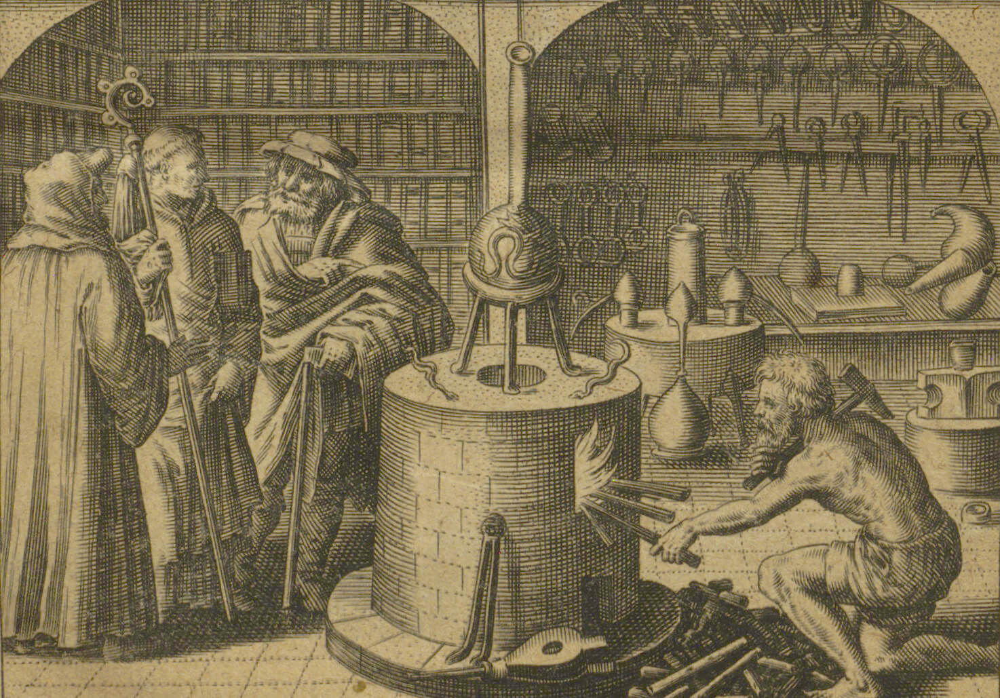
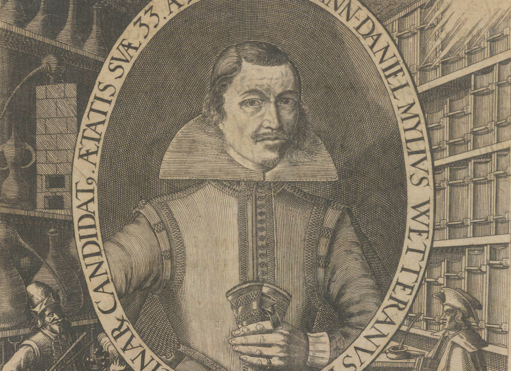

Raum I
Merian und die Tradition der Alchemica illustrata in Frankfurt

Matthäus Merian d.J., Matthævs Merian Senior Bibliopola et Iconographvs Celeberr – Porträt Matthäus Merian d.Ä., Vorderseite von Memoria Merianaea. sive Epicedia, In praematurum et luctuosum Obitum, Francofurti: Hoffmannus 1650, Grabstichelarbeit und Radierung, UB Frankfurt, Portr.Slg. Holzhausen 661a[1] „Jedermann kennt Merian den Älteren als den großen Kupferstecher und Typographen Deutschlands zur Zeit des Dreißigjährigen Krieges.“[2] Diese Aussage stammt […]
Sebastian Furck (1589-1655), Widmungsblatt mit Porträt Matthäus Merian d.Ä., Frankfurt, um 1630/40, bezeichnet: Natus Basilea / A° 1593. 22. Septe(m)b:, London, British Museum, Inv. Nr. 1934,0217.33 Das oval eingefasste Porträt ist zu Lebzeiten Merians d.Ä. im Zeitraum um 1630/1640 entstanden. Es ist der wesentliche Bestandteil eines Widmungsblattes, das der Frankfurter Arzt und Jurist Ludwig von […]
Johann Theodor de Bry, Selbstporträt 1615, Verso des Titelblattes in Robert Fludd, Anatomiae Amphitheatrum effigie triplici, more et conditione varia, designatvm, Frankfurt: Johann Theodor de Bry 1623, UB Frankfurt, Sign. 8° P 5.51, (Abbildungen im UB-Exemplar nicht enthalten), hier gezeigt Exemplar Westfälisches Landesmuseum Münster, Porträtarchiv Diepenbroick, Inv. Nr. C-511983 PAD Das schon 1615 angefertigte Selbstporträt […]
Catalogus omnium librorum, qui ab anno 1616 maximae partis-sumptibus Lucae Iennis Bibliopolae Moeno-Francofurtensis sunt editi Das ist: Verzeichnüß aller Bücher, so Lucas Iennis, Frankfurt: Lucas Jennis 1622, BSB München, Sign. Cat. 743 p Lucas Jennis und die Alchemie Als Sohn eines aus Brüssel eingewanderten Goldschmieds in Frankfurt geboren, bekam Lucas Jennis (1590-nach 1631/37) nach dem […]
hier gezeigt (1) Balthasar Schwan, Titelblatt (Detail) für Johann Daniel Mylius, Philosophia reformata, Frankfurt: Lucas Jennis 1622, UB Frankfurt, Sign. Occ. 1054 (und weiteres Exemplar 8° P 192.5056); (2) Matthäus Merian d.Ä., Emblem IX für Michael Maier, Atalanta fugiens, Oppenheim: Johann Theodor de Bry 1618, Emblem IX, S. 45, UB Frankfurt, Sign. 8° P 5.75 Johann Theodor de Bry, Lucas Jennis und […]

Matthäus Merian d.Ä., Titelblatt (Detail) für Michael Maier, Examen fucorum pseudo-chymicorum detectorum et in gratier veritatis mantium succicte refutatorum, Frankfurt: Johann Theodor de Bry 1617, UB Frankfurt, Sign. 8° P 192.5052, hier gezeigt Exemplar BSB München, Sign. Res/4 P.o.lat. 748,35 Bereits vor seiner Tätigkeit als anerkannter Verleger mit enzyklopädischem Repertoire schuf der junge Merian Bilder, die in das kulturelle […]
Matthäus Merian d.Ä., Titelblatt für Tomaso Garzoni, Piazza Vniversale, das ist: Allgemeiner Schauwplatz oder Marckt vnd Zusammenkunfft aller Professionen Künsten Geschäfften Händlen vnd Handtwercken so in der gantzen Welt geübt werden: Deßgleichen Wann vnd von wem sie erfunden, Frankfurt: Jennis 1619, UB Frankfurt, Sign. Q 16/69 Bei der Betrachtung und Beurteilung der intensiven Illustrationstätigkeit, die […]

Georg Keller, Titelblatt für Andreas Libavius, Alchymia, Frankfurt: Peter Kopff 1606 und Alchemisches Emblem in Commentariorum alchymiæ, in: ebd., Teil II, De lapide philosophorum, Tractus IV, S. 51, UB Frankfurt, Sign. Occ. 29 (aus dem Besitz von Johann Hartmann Beyer>) Die Alchymia gilt als erstes alchemistisches Lehrbuch der Frühen Neuzeit. Darin systematisierte der in Halle […]

Georg Keller (?), Bilderfolge Stein der Weisen in Andreas Libavius, Alchymia, Frankfurt: Peter Kopff 1606, Teil II, De lapide philosophorum, Tractus IV, Commentariorum alchymiæ, hier S. 53 und 55, UB Frankfurt, Sign. Occ. 29 Start, ebd. S. 51 Autor: N.N. Literatur Laube, Stefan, Der Stein der Weisen als magisches Medium, Kat. Nr. 9, Andreas Libavius: […]

Martin Ruland d.J., Lexicon Alchemiae sive dictionarivm alchemisticvm, Frankfurt: Zacharias Palthenius 1612, UB Frankfurt, Sign. GI 1813 Das Lexicon Alchemiae von Martin Ruland d.J. (1569-1611) erschien ein Jahr nach dessen Tod in Frankfurt am Main bei Zacharias Palthenius.[1] Es ist der ausführlichste von mehrfach unternommenen Versuchen, einen lexikographischen Überblick über die Terminologie der Alchemie zu […]
Aegidius Sadeler II., Titelblatt für Oswald Croll, Basilica chymica. Continens philosophicam propria laborum experientia confirmatam descriptionem et usum remediorum chymicorum selectissimorum et lumine gratiae et naturae desumptorum, Frankfurt: Claude de Marne (Marnius) und Erben des Johann Aubry (Aubrius) 1609, UB Frankfurt, Sign. 4° R 808.7171 (und Ausgabe Frankfurt: Tampach 1611, Sign. 4° R 808.7172; Ausgabe […]
Tradition der in Frankfurt publizierten Alchemie- und Kunstbücher im 16. Jahrhundert Peter Kerzenmacher, Alchimia: Das ist Alle Farben, Wasser, Olea, Salia vnd Alvminia, damit mann alle Corpora, Spiritvs vnnd Calces Prepariert, Sublimiert vnnd Fixiert, zubereyten, Frankfurt: Christian Egenolffs Erben, 1570, UB Frankfurt, Sign. Occ. 1087 Nr. 1 Enth. u.a.: Rechter gebrauch der Alchimei. Von soluierung […]

Titelblatt und Conjunctio sive coitus, in: Rosarium philosophorum, secunda pars alchimieae; de lapide philosophico vero modo praeparando, Frankfurt: Cyriakus Jakob (Cyriacus Jacob) 1550, Holzschnitt, UB Frankfurt, Sign. Occ. 850 Das Rosarium philosophorum – Rosengarten der Philosophen (dt. Übersetzung) – ist der zweite Teil der alchemischen Sammelschrift De alchimia opuscula complvra vetervm philosophorum.[1] Das Florilegium De […]
hier gezeigt: Occulta Philosophia: Von den verborgenen Philosophischen Geheimnussen der heimlichen Goldblumen/ und Lapidis Philosophorum, was derselbige: und wie zu Erlangung dessen zu procediren/ außführlicher Bericht in einem Philosophischen Gespräch verfasset, Frankfurt: Johann Bringer 1613, S. 54, HAB Wolfenbüttel, Sign. M: Nd 14 (1) Autor: N.N.
Hans Vredeman de Vries, Theosophische Figur des Oratorium & Laboratorium, gezeichnet Hans von de Vries und gestochen von Paullus van der Doort, 1595; erneut gestochen von Van der Doort, 1602, in: Heinrich Khunrath, Amphitheatrum Sapientiae Aeternae, Hanau: Wilhelm Anton, 1609, hier gezeigt: ULB Sachsen-Anhalt, Sign. AB 171174> This circular image of the Oratory-Laboratory first appeared […]
Johann Diricks van Campen, Hieroglyphische Figur mit dem Text der Tabula Smaragdina, 1602, in: Heinrich Khunrath, Amphitheatrum Sapientiae Aeternae, Hanau: Wilhelm Anton 1609, ULB Sachsen-Anhalt, Sign. AB 171174> The original 1595 edition of the German Theosopher Heinrich Khunrath’s (1560-1605) Amphitheatre of Eternal Wisdom contains four circular Theosophical Figures, which are supplemented in the later 1609 […]
Johann Sadeler d.Ä., nach Maerten de Vos, Serie der Planetenkinder (Planetarum effectus et eorum in signis zodiaci), Antwerpen 1585, hier: Saturn, bezeichnet Joan. Sadler scalp. et excud. / M. de Vos figurauit; SATURNUS, Rijksmuseum Amsterdam, Inv. Nr. RP-P-OB-7465 Bildunterschrift: Falciger ignivomis per celsa draconibus astra / Vectus, ad imbriferi capricorni sidera tendens, / Cui ferus […]
Johann Sadeler d.Ä., nach Maerten de Vos, Darstellung der Alchemie als Magier, Detail Planetenkinder des Saturn> von 1585 Autor: N.N.
Johann Theodor de Bry / Balthasar Schwan, Zwölfter Schlüssel des Basilius Valentinus, in: Michael Maier, Tripus aureus, Frankfurt: Lucas Jennis 1618, Radierung, UB Frankfurt, Sign. Occ. 1148,1 (rechts) Zwölfter Schlüssel des Basilius Valentinus, in: Basilius Valentinus, Ein kurtzer summarischer Tractat Fratris Basilii Valentini Benedectiner Ordens. Von dem grossen Stein […] mit seinen zugehörigen Figuren, […] Benebenst […]
Johann Theodor de Bry / Balthasar Schwan unter Mitarbeit von Matthäus Merian d.Ä. (?), Titelblatt für Michael Maier, Tripus aureus, hoc est, tres tractatus chymici selectissimi, nempe, Frankfurt: Lucas Jennis 1618, Detail, UB Frankfurt, Sign. Occ 1148,1 Workshop Merian, Schwan oder doch De Bry? Kennerschaftliche Fragen zum Frankfurter Künstlerkreis in den Verlagen Johann Theodor de […]
Balthasar Schwan, Titelblatt für Johann Daniel Mylius, Philosophia reformata, Frankfurt: Lucas Jennis 1622, UB Frankfurt, Sign. Occ. 1054 (und weiteres Exemplar 8° P 192.5056) Die Philosophia reformata von 1622 wurde von Johann Daniel Mylius (1583-1631) herausgegeben, umfasst zwei Bücher und entspricht paradigmatisch dem alchemischen Verlagsprogramm des Verlegers. Es handelt sich um eine grundlegende Abhandlung, die […]
Balthasar Schwan, Personifikation der vier Elemente, Detail aus Johann Daniel Mylius, Philosophia reformata, Frankfurt: Lucas Jennis 1622, S. 96, UB Frankfurt, Sign. Occ. 1054 (und weiteres Exemplar 8° P 192.5056) Die beiden Bücher der Philosophia reformata enthalten insgesamt drei Kupferstichserien bzw. Bildzyklen. Die 64 Kupferstiche befinden sich, bis auf einen Stich, alle im ersten Buch […]

Raum II
Alchemische Bildwelten

Johann Daniel Mylius, Opus medico-chymicum: Continens tres tractatus sive basilicas: Quorum prior inscribitur basilica medica. secundus Basilica chymica. tertius Basilica philosophica, Frankfurt: Lucas Jennis 1618/1620, hier 1618, Bd. 1, aus dem Vorbesitz von Johann Hartmann Beyer, UB Frankfurt, Sign. Occ. 1150 Bd. 1 (und weiteres Exemplar 8° R 118. 2001) Obwohl es eine der Ikonen […]
Matthäus Merian d.Ä., Alchemische Weltlandschaft, in: Johann Daniel Mylius, Opus medico-chymicum, Frankfurt: Lucas Jennis 1618/20, hier Bd. 3, 1618, 34,4 x 26cm (Platte: 35 x 28cm), bez. Titel In praefationem tertiam / Basilicae Philsophicae; unten rechts MMerian. fecit. Aus dem Vorbesitz von Johann Hartmann Beyer, UB Frankfurt, Sign. Occ. 1150 Bd. 3 Die sogenannte Alchemische […]
hier gezeigt Georg Keller (?), Alchemisches Emblem mit Leo duplex vnius capitis, in: Commentariorum alchymiæ, Teil II, De lapide philosophorum, Tractus IV, S. 56, Holzschnitt, in: Andreas Libavius, Alchymia, Frankfurt: Peter Kopff 1606, UB Frankfurt, Sign. Occ. 29 Autorin: Berit Wagner (folgt demnächst)
‚Siegel der Philosophen‘ mit Oswald Croll und Johann Daniel Mylius, in: Johann Daniel Mylius, Opus medico-chymicum, Frankfurt: Lucas Jennis 1618/20, Bd. 3, Tafel 10, Detail, UB Frankfurt, Sign. Occ. 1150, Bd. 3 Hierbei handelt es sich um die letzten zwei Embleme der sogenannten ‚Siegel der Philosophen‘ im genannten Werk von 1618. Diese sind eine bislang […]
Matthäus Merian d.Ä. für Johann Baptist Großschedel von Aicha, Calendarium naturale magicum perpetuum, Oppenheim: Johann Theodor de Bry, 1616-1618, ca. 114 x 56,5 cm, aufgezogen auf Leinen, bez. unten links Auth: Johan Babtista Großschedel ab Aicha; unten rechts Io: Theodore de Bry, excud.; Thico Brahae inuentor 1582, Bibliothèque nationale de France, Inv. Nr. GED-5082 Das […]
Ikonographie des Magiers und Erfinders der Alchemie Hermes Trismegistos in den Bildfindungen der Oppenheim-Frankfurter Verlage (1) Johann Theodor de Bry, Emblem des Hermes Trismegistos, in De divinatione et magicis praestigiis 1616 (2) Michael Maier, Symbola Aureae Mensae duodecim nationum, Lucas Jennis Frankfurt 1617 (3) Matthäus Merian d.Ä., Hermes Trismegistos in Atalanta Fugiens, Emblem XXI, Johann […]
Matthäus Merian d.Ä., nach dem Entwurf von Georg Keller (1568-1634/40), Titelblatt für Johann Daniel Mylius, Antidotarium medico-chymicum reformatum, Frankfurt: Lucas Jennis 1620, bez. GK fig. und MMerian. fe.; UB Frankfurt, Sign. 8° R 786.9562 Das radierte Titelblatt des Antidotarium medico-chymicum reformatum von 1620 von Johann Daniel Mylius zeigt eine weitere Arbeit aus dem Œuvre Matthäus […]
Signatur GK fig. – Georg Keller (1568-1634/40) als Entwerfer für Matthäus Merian d.Ä., Titelblatt für Johann Daniel Mylius, Antidotarium, Frankfurt: Lucas Jennis 1620 Auf dem Titelblatt für Johann Daniel Mylius‘ Antidotarium, herausgegeben von Lucas Jennis, sind zwei Signaturen angebracht: GK fig., zu sehen auf der unteren linken Seite des Titelblattes, und MMerian fe., zu finden […]
Matthäus Merian d.Ä., Titelblatt für Daniel Sennert, Institutionum medicinae Libri V. Editio tertia, Wittenberg: Zacharias Schürers [d.Ä.] Erben 1628, UB Frankfurt, Sign. 8° R 41.72/4 (Titelblatt fehlt; Autorenporträt von 1627 enthalten), hier gezeigt Exemplar ULB Sachsen-Anhalt, Sign. Ug 101> Die 1611[1] zum ersten Mal erschienene Abhandlung Institutionum Medicinæ Libri V. des Wittenberger Professors für Medizin, […]

Matthäus Merian d.Ä., Titelblatt für Daniel Sennert, Practicae Medicinae Libri, Wittenberg: Zacharias Schürer Erben 1628-1636, Titelblatt Liber primus, signiert: M. Merian fe:, nicht in der UB Frankfurt vorhanden, hier gezeigt Exemplar British Museum, London, Inv. Nr. 1895,1031.75 Womöglich weil das Titelblatt zu Daniel Sennerts (1572-1637) Medizinbuch nicht in einem der Frankfurter Verlage erschienen ist, fehlte […]
Matthäus Merian d.Ä., Titelblatt für Michael Maier, Viatorium, hoc est, de monitibus planetarum septem seu metallorum, Oppenheim: Johann Theodor de Bry 1618, UB Frankfurt, Sign. 8° R 523.6701 Das radierte Titelblatt des Viatoriums von Michael Maier von 1618 ist ein weiteres prägnantes Beispiel der Alchemica illustrata aus dem Œuvre von Matthäus Merian dem Älteren. Auch […]
Michael Maier, Viatorium, hoc est, de monitibus planetarum septem seu metallorum, Oppenheim: Johann Theodor de Bry 1618, UB Frankfurt, Sign. 8° R 523.6701 Beim Viatorium (1618), dessen Titelblatt Merian ausgeführt hat, handelt es sich um ein Werk Maiers, dem bisher eher wenig Beachtung geschenkt wurde. Zu Unrecht! Handelt es sich schließlich um das wohl am […]

Matthäus Merian d.Ä., Titelblatt für Robert Fludd, Utriusque cosmi maioris scilicet et minoris metaphysica, physica atqve technica historia: in duo volumina secundum cosmi differentiam diuisa, Oppenheim: Johann Theodor de Bry 1617ff., Bd. 1 (Tomus primus, Tractatus primus) De macrocosmi structurae ejusque creaturarum originis historia, 1617, UB Frankfurt, Sign. Occ. 37 Bd. 1,1 (und weiteres Exemplar […]
Matthäus Merian d.Ä., Integræ Naturæ speculum, Artisque imago für Robert Fludd, Utriusque cosmi maioris scilicet et minoris metaphysica, physica atqve technica historia, Oppenheim: Johann Theodor de Bry 1617ff, Bd. 1 (Tomus primus, Tractatus primus) De macrocosmi structurae ejusque creaturarum originis historia, 1617, S. 4f. (Doppelseite), UB Frankfurt, Sign. Occ. 37 (weitere Exemplare Occ. 15, Occ. […]
Matthäus Merian d.Ä., Oculus Imaginationis (Ars memoriæ) für Robert Fludd, Utriusque cosmi maioris scilicet et minoris metaphysica, physica atqve technica historia: Tomvs Secvndvs De Svpernatvrali, Naturali, Præternaturali et Contranaturali Microcosmi historia, in Tractatus tres distributa, Oppenheim: Johann Theodor de Bry 1619, hier Tractatus Primi, Sectionis II., Portio III: Deanimæ memorativæ scientia, quæ vulgo ars memoriæ vocatur. […]

(l) Entwurf für Ars physiognomia für Robert Fludd, Utriusque cosmi maioris scilicet et minoris metaphysica, physica atqve technica historia, montierte Federzeichnung, UB Frankfurt, MS lat. qu. 15, fol. 144r, Detail (r) Matthäus Merian d.Ä., Ars physiognomia für Robert Fludd, Utriusque cosmi maioris scilicet et minoris metaphysica, physica atqve technica historia: Tomvs secvndvs De svpernatvrali, naturali, præternaturali et contranaturali microcosmi historia, in […]
Matthäus Merian d.Ä., Titelblatt für Robert Fludd, Anatomiae Amphitheatrum effigie triplici, more et conditione varia, designatvm, Frankfurt: Johann Theodor de Bry 1623, UB Frankfurt, Sign. 8° P 5.51 (Titelblatt im UB-Exemplar nicht enthalten), hier gezeigt Exemplar Getty Research Institute, Sign. 369782, ID Nr. 1378-360 Für das Titelblatt von Robert Fludds Schauplatz der Anatomie (dt. Übersetzung) […]
Johann Theodor de Bry und Israel de Bry, Ein Muskelmann präsentiert seine abgezogene Haut, 1605, in: Robert Fludd, Anatomiae amphitheatrvm effigie triplici, Frankfurt: Johann Theodor de Bry 1623, Teil II mit anatomischen Illustrationen, S. 63, UB Frankfurt, Sign. 8° P 5.51, hier gezeigt Exemplar Getty Research Institute, Sign. 369782, ID Nr. 1378-360 Die Illustrationen im […]
Matthäus Merian d.Ä., Titelblatt für Michael Maier, Atalanta fugiens, hoc est, emblemata nova de secretis naturae chymica, Oppenheim: Johann Theodor de Bry 1618, UB Frankfurt, Sign. 8° P 5.75 Die Atalanta fugiens ist ein mythoalchemisches Emblembuch von Michael Maier (1568-1622), das erstmals 1617 und erneut 1618 in Zusammenarbeit mit dem Kupferstecher Matthäus Merian d.Ä. auf […]
Matthäus Merian d.Ä., Emblem I. Portavit cum ventus in ventre suo für Michael Maier, Atalanta fugiens, hoc est, Emblemata nova de secretis naturae chymica, Oppenheim: Johann Theodor de Bry 1618, Emblem I, S. 13, UB Frankfurt, Sign. 8° P 5.75 In der Atalanta fugiens beschreibt Michael Maier (1568-1622) in fünfzig Emblemen und dazugehörigen Fugen alchemistische […]
Matthäus Merian d.Ä., Emblem XXXVIII. Rebis, ut Hermaphroditus […] für Michael Maier, Atalanta fugiens, Oppenheim: Johann Theodor de Bry 1618, S. 161, UB Frankfurt, Sign. 8° P 5.75 Emblem XXXVIII trägt den Titel Rebis, ut Hermaphroditus, nascitur ex duobus montibus, Mercurii &Veneris oder Das Rebis wie ein Hermaphrodit wirt gebohren auß zween Bergen deß Mercurii […]

Matthäus Merian d.Ä., Emblem XXIV. Regem lupus voravit & vitae crematus reddidit für Michael Maier, Atalanta fugiens, Oppenheim: Johann Theodor de Bry 1618, S. 105, UB Frankfurt, Sign. 8° P 5.75 Verblasen des Antimons im Experiment zur alchemistischen Goldreinigung, Basel 2021 © Foto: Christoph Jäggy Den König hat der Wolff gefressen, und als er verbrennet […]
Matthäus Merian d.Ä., Emblem XLII. In Chymicis versanti natura, ratio, experientia & lectio, sint dux, scipio, perspicilia, & lampas, für Michael Maier, Atalanta fugiens, Oppenheim: Johann Theodor de Bry 1618, S. 177, UB Frankfurt, Sign. 8° P 5.75 Das Emblem XLII stellt eines der zentralen und in seiner Bedeutung zur Beschäftigung mit der Alchemie ganzheitlichsten in […]
Matthäus Merian d.Ä. Emblem XXXIV. In balneis concipitur, & in aere nascitur, rubeus verò factus graditur super aquas für Michael Maier, Atalanta fugiens, Oppenheim: Johann Theodor de Bry 1618, S. 145, UB Frankfurt, Signatur 8° P 5.75 Emblem XXXIV zeigt eine Landschaft, die in verschiedene narrative Ebenen aufgeteilt ist. In deutscher Sprache verlautbart das Lemma Im Wasserbad […]
Matthäus Merian d.Ä., Titelblatt für Lambspring. Das ist: Ein herzlicher Teutscher Tractat vom Philosophischen Steine, enthalten in: Johannes Rhenanus (Hermannus Condeesyanus) (Hg.), Dyas chymica tripartita, Frankfurt: Lucas Jennis 1625, S. 83-117, UB Frankfurt, Sign. 8° P 194.6015 Für das spätmittelalterliche Emblembuch Lambspring[1] fertigte Matthäus Merian d.Ä. 17 radierte Illustrationen an, die die im Traktat geschilderten […]
Matthäus Merian d.Ä., Salamander, Emblem X, in: Lambspring. Das ist: Ein herzlicher Teutscher Tractat vom Philosophischen Steine, in: Johannes Rhenanus (Hermannus Condeesyanus) (Hg.), Dyas chymica tripartita, Frankfurt: Lucas Jennis 1625, S. 107, UB Frankfurt, Sign. 8° P 194.6015 Figur X des spätmittelalterlichen Lambspring-Traktats thematisiert den letzten Schritt im Herstellungsprozess des Steins der Weisen, bei dem […]
Titelblatt für Michael Maier, Symbola aureae mensae duodecim nationum, Frankfurt: Lucas Jennis 1617, UB Frankfurt, Sign. 8° P 192.5055 Symbola aureae mensae duodecim nationum ist eine Publikation des Arztes und Alchemisten Michael Maier (1568-1622), wurde 1617 von Lucas Jennis verlegt und von Anton Humm gedruckt. Hinter der Kompilation der Symbole der goldenen Tafel aus zwölf […]
Johann Theodor de Bry / Balthasar Schwan unter Mitarbeit von Matthäus Merian d.Ä. (?), Titelblatt für Michael Maier, Tripus aureus, hoc est, tres tractatus chymici selectissimi, nempe I. Basilii Valentini Practica una cum 12 clavibus & app. II. Thomae Nortoni Crede mihi seu ordinale III. Cremeri Abbatis Westmonasteriensis Testamentum, Frankfurt: Lucas Jennis 1618, UB Frankfurt, […]
Matthäus Merian d.Ä., Titelblatt für Musaeum hermeticum, Frankfurt: Lucas Jennis 1625, UB Frankfurt, Sign. 8° P 194.6013 und (erweiterte Ausgabe Musaeum hermeticum reformatum et amplificatum, aureus tractatus de philosophorum lapide, Frankfurt: Hermann Sande 1677, UB Frankfurt, Sign. 8° P 194.6014) Das Musaeum hermeticum ist, wie der Titel schon verheißt, eine Kompilation alchemistisch-hermetischer Texte und ist […]
Johann Theodor de Bry / Balthasar Schwan unter Mitarbeit von Matthäus Merian d.Ä. (?), Dritter Schlüssel mit Drachen (1618), in: Fr. Basilii Valentini, Handgriffe uber die Bereitung des grossen Steins, S. 9, in: Johannes Rhenanus (Hermannus Condeesyanus) (Hg.), Dyas chymica tripartita, Frankfurt: Lucas Jennis 1625, UB Frankfurt, Sign. 8° P 194.6015 Verrätselte Tierdarstellungen sind in […]
Matthäus Merian d.Ä., Titelblatt und Frontispiz Der chymische Chor, in: Johannes Rhenanus (Hermannus Condeesyanus) (Hg.), Dyas chymica tripartita, das ist, Sechs herzliche deutsche philosophische Tractätlein […] nunmehr aber allen Filiis doctrinae zu Nutz an Tag geben, und mit schönen Figuren gezieret, Frankfurt: Lucas Jennis 1625, UB Frankfurt, Signatur 8° P. 194. 6015 Das Sammelwerk Dyas […]
Die erste Tafel mit Adam im Garten Eden, in: Dionysius Andreas Freher, Jeremias Daniel Leuchter, Tables representing man in three different states (dt. Titel Drei Tafeln), Illuminierte Handschrift (ohne Titel), Wasserfarbe und Tinte auf Papier, England, 1717, London, British Library, Add. Ms. 5788 Wiederholt versuchten die Maler und Buchillustratoren, den alchemischen Allegorien der Verwandlung dynamische […]
Balthasar Schwan für Lucas Jennis (Hg.), Herbrandt Jamsthaler, Viatorium spagyricum. Das ist ein gebenedeyter spagyrischer Wegweiser in den edlen Sonnengarten der Hesperidum zu kommen unnd daselbst den güldenen Tincturzweigdess Universals, Frankfurt: Lucas Jennis 1625, ÖNB Wien, Sign. 76.J.84 Alt Prunk, S. 78 gewidmet dem fürstlich-fuldaischen geheimen Rat Conrad von der Thann (1567-1639), Rhön> , siehe auch […]

Raum III
Gelehrten Alchemisten ein Gesicht geben – Netzwerke verdichten
hier gezeigt Matthäus Merian d.Ä., Titelblatt für Michael Maier, Examen fucorum pseudo-chymicorum detectorum et in gratier veritatis mantium succicte refutatorum, Frankfurt: Johann Theodor de Bry 1617, BSB München, Sign. Res/4 P.o.lat. 748,35 Autor: N.N. Literatur Wüthrich II, Nr. 70, S. 89, Abb. 57; Brüning 2004, Nr. 1199; VD17 23:291363Y Beck, Wolfgang, Michael Maiers Examen Fucorum […]
Matthäus Merian d.Ä. Autorenporträt Michael Maier und Wappen, 1617, Radierung, bez. Aetatis svae 49 Ao 1617, hier gezeigt: Frontispiz in Michael Maier, Septimana philosophica, Frankfurt: Lucas Jennis 1620, UB Frankfurt, Sign. 8° P 5.75> Michael Maiers Erscheinungsbild – und ebenso sein Geburtsjahr – ist uns primär durch Merians Autorenbild von 1617 bekannt, das Maiers Symbola […]
Matthäus Merian d.Ä., Autorenporträt Johann Daniel Mylius, Radierung, bez. AETATIS SVAE 33 A° 1618, hier gezeigt Frontispiz in: Ders., Antidotarium medico-chymicum reformatum, Frankfurt: Lucas Jennis 1620, UB Frankfurt, Sign. 8° R 786.9562 Das im Jahre 1618 angefertigte Autorenporträt von Johann Daniel Mylius (1585- nach 1631) zeigt den damals 33-Jähringen als Halbfigur in einem hochovalen Rahmen. […]

Matthäus Merian d.Ä., Autorenporträt Robert Fludd, in: Philosophia sacra & vere Christiana seu Meteorologia cosmica, Frankfurt: Johann Theodor de Bry 1626, signiert Mattheus Merian Basilien: fecit, Epigramm J. Ludovicus Gotofridus (1584-1633), National Portrait Gallery, London, Inv. Nr. NPG D27939 (beschnitten, fehlt Epigramm) Die Radierung diente als Autorenporträt für die Publikation Meteorologia Cosmica aus dem Jahr […]
Matthäus Merian d.Ä., Autorenporträt Daniel Sennert von 1627, Radierung, bez. AETATIS 55 / 1627, signiert M: Merian fc:, hier gezeigt: Frontispiz in Daniel Sennert, Institutionum Medicinae, Wittenberg 1628, UB Frankfurt, Sign. 8° R 786.9562 Daniel Sennert fragt seinen Freund Michael Döring (1582-1644) in Vorbereitung auf die Neuauflage der Institutionum Medicinae in einem Brief von 1619: […]
Matthäus Merian d.Ä., Emblem VII und Emblem XXVIII für Michael Maier, Atalanta fugiens, Oppenheim: Johann Theodor de Bry 1618, Emblem VII, S. 37, Emblem XXVIII, S. 121, UB Frankfurt, Sign. 8° P 5.75 Autor: N.N.
hier gezeigt Lucas Jennis, Eintrag im Stammbuch des Daniel Stoltzius von Stoltzenberg, 1622-1628, Frankfurt 1622, S. 422f., Universitätsbibliothek Uppsala, Sign. Ms. Y 132 d Das Stammbuch des Daniel Stoltzius von Stoltzenberg (geb. um 1600 in Kuttenberg (Kutná Hora), Böhmen, gest. nach 1644) ist eine unschätzbare Quelle zur Geistesgeschichte, Gruppenbildung und zur hohen Kunst des Netzwerkens […]
hier gezeigt Johann Hartmann Beyer und Petrus Uffenbach, Eintrag im Stammbuch des Daniel Stoltzius von Stoltzenberg, 1622-1628, Kupferstich, Frankfurt 1622, hier S. 314f., Universitätsbibliothek Uppsala, Sign. Ms. Y 132 d Autor: N.N.

Porträt Johann Hartmann Beyer, Kopie des Originals von Robert Forell (1858-1927), 1907, 126 x 102 cm, Porträtsammlung Dr. Senckenbergische Stiftung, Inv. Nr. 113 und Brief Michael Maier an Johann Hartmann Beyer (1563-1625) vom 20. Oktober 1617, UB Frankfurt, Sign. Ms. Ff. J. H. Beyer A Nr. 161, f. 207r Johann Hartmann Beyer war der Sohn […]
Philipp Uffenbach, Eintrag im Stammbuch des Daniel Stoltzius von Stoltzenberg, Gouache, Frankfurt 1622, hier S. 379, Universitätsbibliothek Uppsala, Sign. Ms. Y 132 d Die drei ersten Einträge im Stammbuch des Daniel Stoltzius stammen aus dem Jahr 1622, aber nur zwei von ihnen aus Frankfurt, der dritte folgte im November in Kassel. Nach Lucas Jennis, dem […]
Matthäus Merian d.Ä., Der Barmherzige Samariter, Emblematischer Eintrag in Daniel Stoltzius von Stoltzenbergs Stammbuch, 1622-1628, Basel, 2. Januar 1624, lavierte Federzeichnung, 110 x 140 mm, hier S. 452, Universitätsbibliothek Uppsala, Sign. Ms. Y 132 d Im Januar 1624 hat sich Matthäus Merian in Basel in das Stammbuch des paracelsischen Arztes und Michael Maier-Schülers Daniel Stoltzius von […]
Matthäus Merian d.Ä., Nox – Die Vier Tageszeiten (Blatt 4), 18,2 x 27,6 cm, bez. MATTH. MERIAN. 1624 (als Dedikator) und M. Dan: Stolcius d. S. Bohm: / Poet: Laur: Cor: f. (als Dichter), Verleger Peter Aubry, Basel 1624, Herzog Anton Ulrich-Museum, Braunschweig, Inv. Nr. MMerian WB 3.38 1624 verfasste der junge Medizinstudent Daniel Stoltzius […]

Matthäus Merian d.Ä., Domus Sancti Spiritus der Fraternität von Christian Rosenkreuz / Turm der Rosenkreuzer, in: Theophil Schweighart (=Daniel Mögling), Speculumsophicum rhodo-stauroticum. Das ist: Weitläuffige Entdeckung deß Collegii unnd axiomatum von der sondern erleuchten Fraternitet Christ-RosenCreutz, Frankfurt: Johann Theodor de Bry 1618, Radierung, HAB Wolfenbüttel, Sign. A: 24.3 Quod. (3) Autor: N.N.

Matthäus Merian d.Ä., Ergon / Parergon, in: Theophil Schweighart (=Daniel Mögling), Speculum sophicum rhodo-stauroticum. Das ist: Weitläuffige Entdeckung deß Collegii unnd axiomatum von der sondern erleuchten Fraternitet Christ-RosenCreutz, Frankfurt: Johann Theodor de Bry 1618, Radierung, HAB Wolfenbüttel, Sign. A: 24.3 Quod. (3) Daniel Möglings (1596-1636) Rosenkreuzerschrift Der Spiegel der Weisheit des Rosenkreuzes (dt. Übers.) erschien […]
Eintrag Daniel Möglings in das Album amicorum des Matthias Heuschkel von 1616, in: Nicolaus Taurellus, Emblemata physico-ethica, Nürnberg: C. Lochner 1602, N3, Philip Mills Arnold Collection, Washington University Libraries, Sign. N7740 .T38 1602 Zu Beginn des 17. Jahrhunderts verwendete der Altdorfer Medizinstudent Matthias Heuschkel das Emblembuch von 1602 als Album amicorum. Auch Daniel Mögling, dessen […]
Landgraf Moritz von Hessen-Kassel, Frankfurt a. M., Bauaufnahme von Hofanlagen und Skizze eines Laboratoriums, 1629/1630, Zeichnung mit Feder und Pinsel, 32,4 x 20,8 cm (Blattmaß), Hessen Kassel Heritage, Graphische Sammlung, Inv. Nr. Marb. Dep. 250a Landgraf Moritz der Gelehrte und die Alchemie in Frankfurt Landgraf Moritz von Hessen-Kassel (1572-1632), genannt der Gelehrte, war eine vielseitig […]
Raum IV
Hexenwelt der Zaubereÿ und wundertätige Einhörner
Matthäus Merian d.Ä. nach einem Entwurf von Michael Herr, Zaubereÿ, Frankfurt am Main oder Nürnberg 1626, 28,8 × 33,4 cm, signiert Michael Herr invent und M. Merian fecit, 1626, British Museum, Nr. 1880,0710.388 Die Radierung nach dem Entwurf des Nürnberger Malers und Kupferstechers Michael Herr (1591-1661) trägt den Titel Zaubereÿ und zeigt in vielen Details […]
© KHM-Museumsverband, Wien hier gezeigt Frans II. Francken, Hexenversammlung, 1607 datiert, 56 x 83,5 cm, bez. links unten: DEN. JON fransis franckeN / fecit et INtor / 1607, Kunsthistorisches Museum Wien, Gemäldegalerie, Inv. Nr. 1070 In der Zeit um 1600 finden sich insbesondere in der flämischen Kunst immer wieder Darstellungen sogenannter Hexen. Vor allem die […]
Matthäus Merian d.Ä., Illustrationen für Laurent Catelan, Ein schöner newer historischer Discurs von der natur, tugenden, eigenschafften, und gebrauch des einhorns, übersetzt und herausgegeben von Georg Faber, Frankfurt: Lucas Jennis 1625, Einhorn, S. 19 und Rhinocerus, S. 9, UB Frankfurt, Sign. 8° R 180.3165 Im Jahre 1624 in Montpellier erschienen,[1] kam die Verteidigungsrede zur Wirksamkeit […]

Matthäus Merian d.Ä., Hirsch und Einhorn, Emblem III, in: Lambspring. Das ist: Ein herzlicher Teutscher Tractat vom Philosophischen Steine, in: Johannes Rhenanus (Hermannus Condeesyanus) (Hg.), Dyas chymica tripartita, Frankfurt: Lucas Jennis 1625, S. 93, UB Frankfurt, Sign. 8° P 194.6015 Nebst omnipräsenten Pelikan und Feuersalamander mag das Einhorn lediglich eine marginale Rolle im allegorischen Kanon […]
Raum V
Transformation von Motiven und Figuren
Georg Keller, Titelblatt für Andreas Libavius, Alchymia, Frankfurt: Peter Kopff 1606, UB Frankfurt, Sign. Occ. 29> Matthäus Merian d.Ä., Titelblatt für Daniel Sennert, Institutionum medicinae Libri V. Editio tertia,Wittenberg: Zacharias Schürers [d.Ä.] Erben 1628, UB Frankfurt, Sign. 8° R 41.72/4 (Titelblatt fehlt; Autorenporträt von 1627 enthalten), hier gezeigt Exemplar ULB Sachsen-Anhalt, Sign. Ug 101> Siehe zu Sennert auch Matthäus Merian d.Ä., […]
Der chymische Baum, in: Vier Tractätlein Fr. Basilii Valentini, Tractat 1, S. 28, in: Johannes Rhenanus (Hermannus Condeesyanus) (Hg.), Dyas chymica tripartita, Frankfurt: Lucas Jennis 1625, UB Frankfurt, Sign. 8º P 194.6015 Nr. 1 Seit den Anfängen westeuropäischer Religionskultur, standen Bäume im Zentrum verschiedener Anschauungen. Livius berichtet von dichten Wäldern in Norditalien voller Eichen, die […]
Matthäus Merian d.Ä. nach dem Entwurf von Johann Theodor de Bry, Titelblatt für Caspar Bauhin, Theatrum anatomicum, Bd. 2, Frankfurt: Johann Theodor de Bry 1621, UB Frankfurt, Sign. 4° R 171.1487 Als es 1620/1621 zur zweibändigen Neuauflage des bauhinschen Theatrum anatomicum> von 1605>[2] kam, war es Matthäus Merian d.Ä., der die Druckplatte für das Titelblatt […]
Matthäus Merian d.Ä., Berck am Neckar (Bellerophon), in: Novae regionum aliquot amaenissimarum delineationes. Ex naturali locorum. Positu de sumptae, et aeri incisae. Per Mattheum Merianum Basiliensem, Straßburg: Peter Aubry 1624, Radierung, Büttenpapier 14,4 x 17,5 cm, Staatsgalerie Stuttgart, Graphische Sammlung Inv. Nr. An 3396 Matthäus Merian d.Ä., Emblem XXXVI für Michael Maier, Atalanta fugiens, Oppenheim: Johann Theodor de Bry […]
Titelblatt für Daniel Stoltzius von Stoltzenberg, Viridarium Chymicum figuris cupro incisis adornatum, et poeticis picturis illustratum […], Frankfurt: Lucas Jennis 1624, Stiftung der Werke von C.G. Jung (Zürich), Sign. CE 24 Titelblatt für Daniel Stoltzius von Stoltzenberg, Chymisches Lustgärtlein / Mit schönen in Kupffer geschnittenen Figuren […], übers. von Daniel Meißner, Frankfurt: Lucas Jennis 1624, […]
(1) Matthäus Merian d.Ä., nach dem Entwurf von Georg Keller (1568-1634/40), Titelblatt für Johann Daniel Mylius, Antidotarium medico-chymicum reformatum, Frankfurt: Lucas Jennis 1620, UB Frankfurt, Sign. 8° R 786.9562; (2) Matthäus Merian d.Ä., Titelblatt für Antidotarium, mit anderem Titelfeld wiederverwendet für Hydrolithus Sophycus, seu Aquarium sapientum, Frankfurt: Lucas Jennis 1625, als Adligat in Musaeum hermeticum, UB Frankfurt, Sign. 8° […]
Eva, Natura oder Alchemia – Zur Rezeption und Transformation weiblicher Figuren bei Merians Alchemica illustrata hier gezeigt (1) Matthäus Merian d.Ä., Integræ Naturæ speculum, Artisque imago (Detail), in: Robert Fludd, Utriusque cosmi maioris scilicet et minoris metaphysica, physica atqve technica historia, Oppenheim: Johann Theodor de Bry 1617ff, Bd. 1 (Tomus primus, Tractatus primus) De macrocosmi structurae ejusque creaturarum […]
Drei Fragmente einer Gemäldeserie nach Radierungen von Matthäus Merian d.Ä. in Michael Maier, Atalanta fugiens, Oppenheim: Johann Theodor de Bry 1617/18, 17. Jahrhundert, norddeutscher Raum(?), Öl auf Eichenholz, ca. 24,5 x 46 cm, Bibliotheca Philosophica Hermetica, Amsterdam (ohne Signatur) In der Kunstgeschichte der Emblembücher war es keine Seltenheit, dass die Bildkompositionen der Picturae in anderen […]
Matthäus Merian d.Ä., Rahmenmedaillon mit vierbrüstiger Natura, Detail von Titelblatt Musaeum hermeticum, Frankfurt: Lucas Jennis 1625, UB Frankfurt, Sign. 8° P 194.6013 Das eindrückliche Icon von Emblem XLII aus Maiers Atalanta fugiens transformiert Merian einige Jahre später in ein Rahmenmedaillon auf dem hochkomplexen Titelblatt für das Musaeum hermeticum. Die Übertragung des Motivs hat Merian bewusst […]
Französische Übersetzung und Kopie von Michael Maier, Atalanta fugiens, Oppenheim: Johann Theodor de Bry 1618, Illuminierte Handschrift, Frankreich (?), 17. Jh., Ms. Manly Palmer Hall 170, Box 27, unpaginiert, Los Angeles, Getty Research Institute Im 16. bis zum 18. Jahrhundert war es typisch, die gedruckten Versionen von alchemischen Handschriften mit vereinfachten oder manchmal sogar verbesserten […]
Kopie nach dem Stich von Matthäus Merian d.Ä., Robert Fludd – alias de Fluctibus, in: Roth-Scholtz, Friedrich (Hrsg.): Icones Virorum omnium ordinum eruditione […] de Republica litteraria […] optime meritorum. Pars Prima. – Nürnberg/Altdorf: Johann Daniel Taubers Erben 1725, HAB Wolfenbüttel, Sign. Uo 4° 42 (1), (fol.16), hier gezeigte Abbildung aus der Porträtsammlung der HAB Wolfenbüttel, […]
Georg Crossmann (Baumeister), Ernst Crossmann (Bildhauer), Erker der Ratsapotheke am Rathaus von Lemgo, 1612 Sein außergewöhnliches Bildprogramm hebt den Erker der Ratsapotheke von Lemgo aus der Menge vergleichbarer Bauwerke hervor. Der umlaufende Fries mit den Bildnissen berühmter Naturforscher, Alchemisten und Ärzte seit der Antike ist einzigartig. Porträts von Alchemisten erschienen oft in Handschriften und Druckwerken, […]
Raum VI
Materielle und spirituelle Kultur der Alchemie
hier gezeigt Conterfaytung deß Hermetis Trismegisti, in: Giovanni Battista Birelli, Alchimia nova. Die Güldene Kunst Selbst/Oder Aller Künsten Gebärerin, […] auß dem Italianischen […] durch Petrum Uffenbachium der Artzney D. vnd bestälten Medicum in Franckfurt. Mit schönen und nohtwendigen Figuren, Frankfurt: Zacharias Palthenius und Niclas Hoffmann 1603, S. 292, UB Frankfurt, Sign. Occ. 989, hier […]
Matthäus Merian d.Ä., De Macrocosmi Principiis (De Chaos) für Robert Fludd, Utriusque cosmi maioris scilicet et minoris metaphysica, physica atqve technica historia, Oppenheim: Johann Theodor de Bry 1617ff, Bd. 1 (Tomus primus, Tractatus primus) De macrocosmi structurae ejusque creaturarum originis historia, 1617, S. 41, UB Frankfurt, Sign. Occ. 37 (weiteres Exemplar Occ. 15) Autor: N.N.
David Teniers d. J., Der Alchemist, ca. 1643-1645, Öl auf Leinwand, 50,7 x 71,2 cm, Herzog Anton Ulrich-Museum Braunschweig, Inv. Nr. GG 140 © Herzog Anton Ulrich-Museum Braunschweig, Foto: B. P. Keiser Die Alchemistenwerkstatt der Frühen Neuzeit wird nicht selten mit einem Ort von Mysterien und okkulten Künsten assoziiert. Doch neben der Suche nach dem […]

(links) Gläserne Retorte des Wittenberger Alchemisten, ca. 1570-1620, Glas mit Resten von rotem Lehm, Lutherstadt Wittenberg, Fund von 2012, Sachsen-Anhalt, LDA Sachsen-Anhalt, Foto Vera Keil, Bef. 482 (mittig) Destillierapparatur des Wittenberger Alchemisten, Destillierhelm (Alembik) und Destillierkolben (Cucurbit), ca. 1570-1620, Glas mit Resten von rotem Lehm, Fund von 2012, Lutherstadt Wittenberg, Sachsen-Anhalt, LDA Sachsen-Anhalt, Foto Vera […]

Heinrich Khunrath (Entwerfer), Contrafactura des Philosophischen Ofens, in: Heinrich Khunrath, Warhafftiger Bericht vom Philosophischen Athanore, Auch Brauch unnd Nutz desselbigen, Editio tertia, & auctior, Magdeburg(?): in Verlegung des Authoris 1615, S. 15, UB Frankfurt, Sign. 8° P 194.6004 Der Athanor des Heinrich Khunrath – Beschreibung, Funktionsweise und Einordnung Während heute Reagenzgläser und Glaskolben Sinnbilder der […]
Christoph Müller und Hans Jacob Emck, Alchemistischer Destillierofen des Landgrafen Moritz, Deutschland, Kassel, um 1600, Kupferbronze, feuervergoldet, 43 x 43 cm, Hessen Kassel Heritage, Astronomisch-Physikalisches Kabinett, Inv. Nr. APK F 112 Der Destillierofen von Landgraf Moritz von Hessen-Kassel (1572-1632) ist von überragender kulturhistorischer Bedeutung, weil er die tiefgehende praktische Beschäftigung eines gelehrten Fürsten mit der […]

Peter Paul Rubens, Portrait of Paracelsus, ca. 1615-1620, oil on panel, 77.5 x 54.5 cm. Brussels, Royal Museum of Fine Arts, inv. 3425. Executed by Rubens between 1615 and 1620, the Portrait of Paracelsus shows the famous Swiss physician and alchemist facing a parapet and clutching a half-open booklet between the fingers of one hand, […]
imitatio naturae – Kunstheorie und Alchemie Jan Brueghel d.Ä. (1568-1625), Allegorie des Feuers, 1608, 46 x 66 cm, Öl auf Kupfer, Pinacoteca – Accademia Ambrosiana Die Allegorie des Feuers schuf Jan Brueghel d.Ä. im Zyklus der vier Elemente im Auftrag von Kardinal Federico Borromeo (1564-1631). Das ‚Feuerbild‘ zeigt mit dem enzyklopädischen Interesse der Elementbilder […]
Jan Brueghel d.Ä. und Hendrick van Balen, Allegorie des Feuers (Le Feu), 1606, Öl auf Leinwand, 46 x 83 cm, Musée des Beaux-Arts de Lyon, Inv. A 75 hochauflösende Ansicht des Gemäldes Autor: N.N.
Die Alchemie des Radierens. Merian als Künstler und als Alchemist hier gezeigt Matthäus Merian d.Ä., De tenebris (Et sic in infinitum) für Robert Fludd, Utriusque cosmi maioris scilicet et minoris metaphysica, physica atqve technica historia: in duo volumina secundum cosmi differentiam diuisa, Oppenheim: Johann Theodor de Bry 1617ff., Bd. 1 (Tomus primus, Tractatus primus) De macrocosmi structurae ejusque creaturarum […]

Rippenkrug aus Achatglas, wohl Venedig, Ende 15. Jahrhundert (Fassung wohl 19. Jh.), Achatglas (calcedonio), formgeblasen, aus mehreren Teilen verschmolzen, Silber, vergoldet, (H × D Fuß) 36 x 13 cm, Kunstpalast Düsseldorf, Glasmuseum Hentrich, Inv. Nr. P 1992-23 Die Glasmasse dieses Krugs ist wie geschaffen, um alchemistische Ansichten über die Transmutation zu veranschaulichen. Eine Vielzahl verschiedener […]
Bernard Palissy (attribué à), Bassin ovale de rustiques figulines, um 1550/60, glasierte Keramik, 48 x 37 x 9,5 cm, Paris, Musée du Louvre, Inv. Nr. MR 2295 © 2002 RMN-Grand Palais (Musée du Louvre) / Jean-Gilles Berizzi (Datenbank des Louvre vgl.>) Die Schöpfung auf dem Teller. Die rustiques figulines des Bernard Palissy Der französische Künstler […]
Hans Vredeman de Vries, Theosophische Figur des Oratorium & Laboratorium, gezeichnet von Hans Vredeman de Vries und gestochen von Paullus van der Doort, 1595, in: Heinrich Khunrath, Amphitheatrum Sapientiae Aeternae, Hamburg (?) 1595, University of Wisconsin-Madison Special Collections, Sign. Duveen D 897 This circular image of the Oratory-Laboratory first appeared in the rare 1595 edition […]
Armillarsphäre mit Handgriff (Messinstrument), um 1500, Durchmesser 16 cm, Länge 35 cm, Leihgabe der Stadt Nürnberg im Germanischen Nationalmuseum Nürnberg, Sammlung Waffen und Jagdkultur, Wiss. Instrumente und Medizingeschichte, Inv. Nr. WI23 Die hier gezeigte Armillarsphäre mit Handgriff ist ein mittelalterliches Instrument zur Berechnung der Konstellation von Planteten und Sternen, das außerdem zu Lehrzwecken diente. Es […]
hier gezeigt David Teniers d.J. (1610-1690), Der Alchimist (Detail), um 1643-1645, 50,7 x 71,2 cm, Herzog Anton Ulrich-Museum Braunschweig, Inv. Nr. GG 140 Autor: N.N. Globus als wissenschaftliches Instrument und Kunstkammerobjekt im RDK – Reallexikon der Kunst
‚Siegel der Philosophen‘ mit Oswald Croll und Johann Daniel Mylius (Detail), in: Johann Daniel Mylius, Opus medico-chymicum, Frankfurt: Lucas Jennis 1618/20, Bd. 3, Tafel 10, Detail, UB Frankfurt, Sign. Occ. 1150, Bd. 3 Sympertus Niggell (Hersteller), Laute 6-chörig (Gallichon), 1754 Füssen, Musikinstrumente-Sammlung im Germanischen Nationalmuseum Nürnberg, Inv. Nr. MIR895 Eintrag im Objektkatalog des GNM Autor: N.N.
Medal with alchemical and mystical symbolism (Medaille auf die Transmutation, Bezeichnung des Objektes im Germanischen Nationalmuseum), o.J., 16./17. Jahrhundert, Gold geprägt, Sammlung Münzen-Medaillen im Germanischen Nationalmuseum Nürnberg, Inv. Nr. Med5830 Alchemical medals represented together with alchemical coins a category of artifacts that were to be made of precious metals obtained by the alleged transmutation of […]
Hans de Bull (Hans Bulla), Die Alchemistische Tischglocke Kaiser Rudolfs II., um 1600, aus einer Legierung der klassischen sieben Metalle, vergoldet, Klöppel aus Eisen, Bronze, 7,8 cm × 6,3 cm, Kunsthistorisches Museum Wien, Kunstkammer, Inv. Nr. Kunstkammer, 5969 Die sogenannte Alchemistische Tischglocke[1] stammt aus der Kunstkammer Kaiser Rudolfs II. und befindet sich heute in den […]
Alchemistische Medaille, 16./17. Jh., Gold, Durchmesser: 26,5 mm, Gewicht: 24,6 g, Landesmuseum Württemberg, Inv. Nr. MK 19316 An der Wende vom 16. zum 17. Jahrhundert richtete Herzog Friedrich von Württemberg (reg. 1593-1608) in Stuttgart eine Kunstkammer ein, in der Objekte aus den unterschiedlichsten Bereichen versammelt waren, kunsthandwerkliche Arbeiten aus kostbarsten Materialien und von höchster Qualität, […]
Caspar Ulich, Handstein mit dem Opfer Abrahams, St. Joachimsthal, 1563 datiert, Silbererzstufe, verschiedene Mineralien, Silber, vergoldet, 19,8 cm × 9 cm, bezeichnet MENS IMMOTA MANET 15 AB 63 und ABRAHAM IÖRGER, Kunsthistorisches Museum Wien, Kunstkammer, Inv. Nr. Kunstkammer, 4142 “Mens Immota Manet”: Assaying Faith in the Early Modern Ore Mountains The Kunsthistorisches Museum in Vienna […]
Johann Gregor von der Schardt (Entwurf für die Figur), Kruzifix auf Mineralienberg, um 1570/80, 73,5 x 39,9cm, Holz, Bronze, Mineralienberg: Edelsteine, Mineralien, Weichschwamm, Turmschnecken, ursprünglich Mineraliensammlung des Paulus Praun (1548-1616), ehemals Sammlung Paulus Praun in Nürnberg, Leihgabe des Freistaats Bayern im Germanischen Nationalmuseum Nürnberg, Gewerbemuseum, Inv. Nr. LGA6863 Eintrag im Objektkatalog des GNM Autor: N.N.
Unbekannter Künstler (Bildhauer) und Samuel Haber (Maler), Epitaph für den Mediziner Christian Lange (1619-1662) und Anna Maria geb. Macasius, 1679, 429 x 308 x 40 cm, Universitätskirche St. Pauli, Leipzig, Kunstbesitz der Universität Leipzig, Inv. Nr. 1913:326 (rechts) Obere Kartusche am Epitaph für den Mediziner Christian Lange mit alchemischer Ikonographie (Detail von links) Autorin: Anne […]
Raum VII
Malerei und Alchemie? Merians anthropomorphe Landschaften
Autorin: Tetiana Bär (folgt demnächst)
Matthäus Merian d.Ä., Anthropomorphe Halbinsel (Kopflandschaft), Radierung, zwischen 1620 und 1623/4 verlegt von Peter Aubry, unten links signiert MMerian fec., unten links P. Aub. Ex., Herzog Anton Ulrich Museum, Braunschweig, Inv. Nr. MMerian WB 3.121 Anthropomorphe Landschaftsbilder sind Bildkompositionen mit gemalten oder gezeichneten Naturszenerien, die beispielsweise spätestens durch eine 90 Grad-Wendung menschliche Formen erkennen lassen. […]
Autor: N.N.
Autor: N.N.